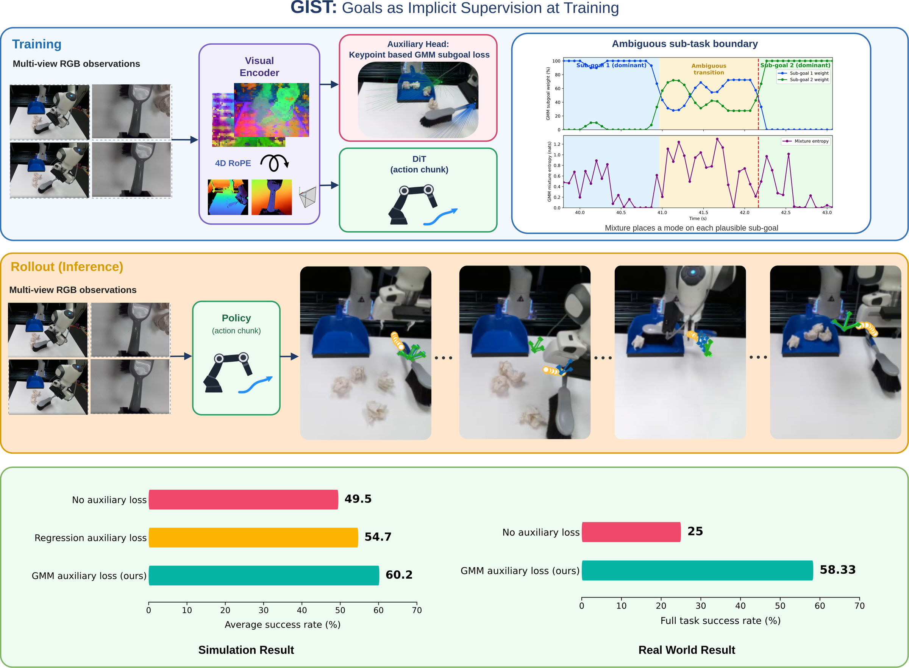

<title>GIST: Goals as Implicit Supervision</title>
<meta name="description" content="GIST: Goals as Implicit Supervision at Training for Visuomotor Policy Learning">
<link rel="stylesheet" href="style.css">

<header class="hero">
  <div class="container">
    <span class="venue">ICRA Submission</span>
    <h1 class="title">GIST: Goals as Implicit Supervision at Training<br>for Visuomotor Policy Learning</h1>

    <p class="authors">Anonymous Authors</p>
    <p class="affiliations"><em>Anonymized for double-blind review.</em></p>

    <div class="links">
      <a class="btn primary" href="./">Paper (PDF)</a>
      <a class="btn" href="./">Code</a>
      <a class="btn" href="#bibtex">BibTeX</a>
    </div>
  </div>
</header>

<main>
  <div class="container">
    <section id="teaser">
      
      <p class="figure-caption">
        <strong>Top:</strong> GIST predicts an action chunk from multi-view RGB observations, uses RoPE-4D to ground
        observation, and uses a keypoint-based GMM auxiliary loss during training, which is discarded during rollout.
        <strong>Bottom:</strong> Average success rate in simulation and full task success in the real world, against a
        policy trained without the auxiliary loss and one whose auxiliary head regresses a single sub-goal.
      </p>
    </section>

    <section id="abstract">
      <h2 class="section-title">Abstract</h2>
      <p class="abstract">
        We present GIST, an end-to-end visuomotor policy trained with an auxiliary sub-goal prediction loss for manipulation tasks with non-prehensile components. Adding structure to behaviour cloning manipulation policies has been shown to improve robustness and generalization, with sub-goal based hierarchies predicting intermediate sub-goals with a high-level model and leaving a low-level policy to reach them. These sub-goals are typically extracted at gripper open-close frames, and hence the hierarchy is learned around this discrete signal. Non-prehensile settings, such as pouring or sweeping, hold the gripper in a fixed configuration, so no such open-close events occur and transitions go undetected. GIST instead uses sub-goals purely as a training signal. An auxiliary head reads the visual tokens the policy acts on and predicts a weighted Gaussian mixture over the next sub-goal gripper pose, placing a mode on each plausible sub-goal instead of collapsing to an average. The head is discarded after training. Across four simulation and three real-world tasks, GIST outperforms a standard sub-goal based hierarchical policy by 15.2\% and a stronger uncertainty-aware baseline that we formulate by 5.9\%, while removing the auxiliary loss costs 10.7\% in simulation and 33.3\% in the real world. GIST also outperforms Diffusion Policy by 3.4\% across five prehensile and non-prehensile MimicGen tasks, and by 4.4\% in target area coverage on Push-T. Performance is largely insensitive to the sub-goal extraction procedure, indicating that what matters is the presence of spatial goal supervision, not its precise definition. Website: \url{https://gist-implicit-subgoal.github.io/}

      </p>
    </section>

    <section id="bibtex">
      <h2 class="section-title">BibTeX</h2>
      <pre class="bibtex"><button class="copy-btn" onclick="copyBibtex()">Copy</button><code id="bibtex-code">@misc{gist2026,
  title  = {GIST: Goals as Implicit Supervision at Training for Visuomotor Policy Learning},
  author = {Anonymous Authors},
  note   = {Submitted to ICRA 2026},
  year   = {2026}
}</code></pre>
    </section>
  </div>
</main>

<footer>
  <div class="container">
    <p>Website built with a plain HTML/CSS template.</p>
  </div>
</footer>

<script src="script.js"></script>
